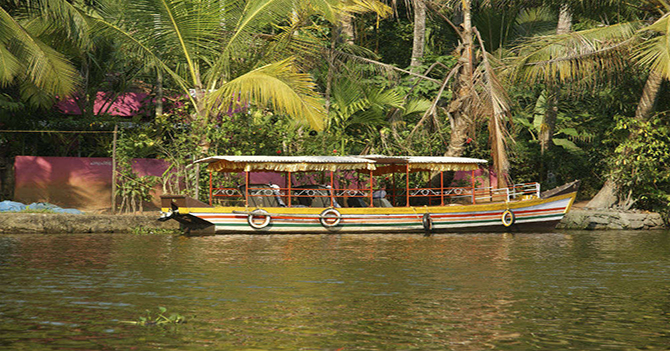
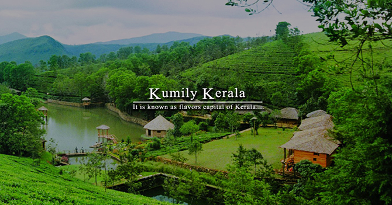

Periyar is the the pride destination in Southern India with green surroundings and beautiful sights. It has wider zone for tourists and travellers to roam around and enjoy its serenic beauty of mystic mountains, rich flora-fauna and spice plantations.
Periyar is the part of Thekkady in Idukki district located on the Kerala-Tamil Nadu border. Periyar is famous for its National Park and Tiger Reserve. You can also enjoy Wildlife safari in Periyar.
Periyar is an ideal holiday destination for its plesant climate and its landscape scenary. Periyar has pleasant climate and atmosphere throughout the year, so you can visit Periyar in any season. Boating experience in Winter season will refreshes your soul and amaze your mind.
If you wants to reach Periyar to witness its natural beauty, enjoying boating, vising wildlife parks then you can get there by Air, Road and Rail.
1. By Air.
The Nearest Airport to Periyar is Madurai Airport which is at a distance of 140 km from Periyar. If you want to reach Periyar by flight, then you have to reach Madurai Airport first. Then, you can hire taxi or online cab outside the airport to reach Periyar. Another nearby airport is Cochin International airport in Kochi which is at a distance of around 27 km from Thekkady.
2. By Rail.
The Nearest railway station is situated in Kottayam at a distance of 110 km from Periyar. You can hire taxi, private cabs or buses from outside the railway station to reach Periyar.
3. By Road.
Periyar has a good connectivity of roads from all the major cities of Kerala.
You can also reach Periyar by your private car or taxis.
State buses of Kerala regularly plying to and fro the Periyar.
1. Periyar National Park, Periyar

Periyar forest is the national treasure that contains the most vivid range of flora and fauna. It also have the wide range of mammals, birds, reptiles and amphibians.
Periyar National Park creates a great scenic beauty by its surroundings.
Peoples can enjoy Jeep safari, Elephant safari and boat riding in the lakes of Periyar.
Periyar Lake is adorned with an excellent boating spot for tourists and travellers.
You can sit on upper deck of boat cruise and enjoy the majestic view of Forest while riding. You can also book or rent your own boat there.
Best time to visit Periyar wildlife sanctuary is from the months of October to June.
2. Kumily Town, Periyar

Kumily is a beautiful town in Cardamon Hills near Thekkady and Periyar Tiger Reserve. It is the largest gram panchayat in the Idukki district of Kerala. It is gateway town to Kerala from Tamil Nadu which offers easy access for many Kerala bound merchants and laborers.
You can enjoy the boat safari and trekking in Kumily. There are many areas near Kumily that are perfect for Trekking.
You can also go for a drive in the roads of Kumily.
3. Pullumedu, Thekkady
Pullumedu is at a distance of 46 km from Thekkady and 26 km away from Periyar. 'Pullumedu' means Green meadows and you will find this place relatable to its name after visiting there. It looks like the green blanket over the land. It is a must-visit place for those who plans to visit Thekkady.
Sabrimala Devotees gather here in the month of January to witness the divine 'Makarajyothi'(Celestial Light). It is very easy to watch the divine 'Makarajyothi' from Pullumedu.
Pullumedu is also blessed with huge variety of flora and fauna. Months from September to December are considered to be the best time to visit Pullumedu.